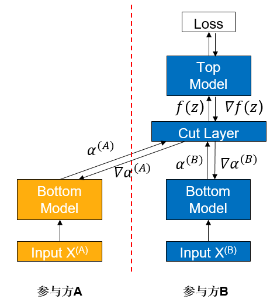
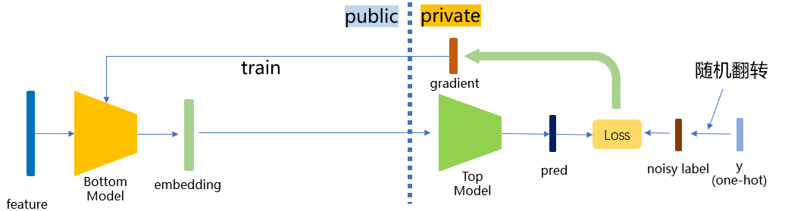

纵向联邦-基于差分隐私的标签保护

背景
纵向联邦学习（vFL）是联邦学习（FL）的一大重要分支。当几个参与方拥有同一批用户不同属性的数据时，他们便可使用 vFL 进行协同训练。在 vFL 中，拥有用户特征的参与方（简称follower 方，如下图参与方 A）会持有一个下层网络（Bottom Model），他们将特征输入下层网络，计算得到中间结果（embedding），发送给拥有标签的参与方（简称 leader 方，如下图参与方 B），leader 方使用这些embedding 和自己持有的标签来训练上层网络（上层网络），再将算得的梯度回传给各个参与方来训练下层网络。由此可见，vFL 不需要任何参与方上传自己的原始数据即可协同训练模型。

vFL框架避免了原始数据的直接上传，因此在一定程度上保护了隐私安全，然而一个半诚实或者恶意的follower方有可能从leader方回传的梯度反推出leader方的标签信息，造成隐私安全隐患。考虑到在大量vFL场景中，标签是最有价值并且最需要保护的信息，在这样的背景下，我们需要对vFL训练提供更强的隐私保证来避免隐私信息的泄露。
差分隐私（Differential Privacy，DP）是一种严格基于统计学/信息论的隐私定义，是目前数据分析领域对于隐私保护的黄金标准。DP核心思想是通过在计算过程中引入随机性，来淹没个体数据对最终计算结果的影响，从而保证计算结果难以反推出个体信息。DP保护能够在极强的威胁模型下保持成立，即使在以下条件下都无法被攻破：
攻击者知道算法的所有细节
攻击者有无限的算力
攻击者关于原始数据有任意多的背景知识
关于DP的背景、理论和具体实现，可以参见[1]获取更细致的介绍。
本设计方案基于标签差分隐私（label differential privacy，label dp）[2]，在纵向联邦学习训练时为 leader 参与方的标签提供差分隐私保证，使攻击者难以从回传的梯度反推出数据的标签信息。在本方案的保护下，即使follower方是半诚实或者恶意的，都能确保在训练过程中leader方的标签信息不会被泄露，缓解参与方对于数据隐私安全的担忧。
算法实现
MindSpore Federated采用了一种轻量级的label dp实现方式：训练时，leader参与方在使用标签数据训练之前，对一定比例的标签进行随机翻转操作。由于随机性的引入，攻击者若想反推标签，最多只能反推出随机翻转/扰动之后的标签，增加了反推出原始标签的难度，满足差分隐私保证。在实际应用时，我们可以调整隐私参数eps（可以理解为随机翻转标签的比例）来满足不同的场景需求：
较小
eps（<1.0）对应高隐私，低精度较大
eps（>5.0）对应高精度，低隐私

本方案具体实际实现时，分为binary标签和onehot标签两种情况，函数中会自动判断输入的是binary还是onehot标签，输出的也是同类的标签。具体算法如下：
binary标签保护
根据预设的隐私参数eps，计算翻转概率\(p = \frac{1}{1 + e^{eps}}\)。
以概率\(p\)翻转每个标签。
one-hot标签保护
对于n个类的标签，计算\(p_1 = \frac{e^{eps}}{n - 1 + e^{eps}}\)，\(p_2 = \frac{1}{n - 1 + e^{eps}}\)。
根据以下概率随机扰乱标签：维持当前标签不变的概率为\(p_1\)；改成其他n - 1个类里的任意一个的概率都为\(p_2\)。
快速体验
我们以Wide&Deep纵向联邦学习案例中的单进程案例为例，介绍如何在一个纵向联邦模型中加入label dp保护。
前置需要
安装MindSpore1.8.1或其更高版本，请参考MindSpore官网安装指引。
安装MindSpore Federated及所依赖Python库
cd federated python -m pip install -r requirements_test.txt
准备criteo数据集，请参考Wide&Deep纵向联邦学习案例。
启动脚本
下载federated仓
git clone https://gitee.com/mindspore/federated.git
进入脚本所在文件夹
cd federated/example/splitnn_criteo
运行脚本
sh run_vfl_train_local_label_dp.sh
查看结果
在训练日志log_local_gpu.txt查看模型训练的loss变化：
INFO:root:epoch 0 step 100/2582 loss: 0.588637
INFO:root:epoch 0 step 200/2582 loss: 0.561055
INFO:root:epoch 0 step 300/2582 loss: 0.556246
INFO:root:epoch 0 step 400/2582 loss: 0.557931
INFO:root:epoch 0 step 500/2582 loss: 0.553283
INFO:root:epoch 0 step 600/2582 loss: 0.549618
INFO:root:epoch 0 step 700/2582 loss: 0.550243
INFO:root:epoch 0 step 800/2582 loss: 0.549496
INFO:root:epoch 0 step 900/2582 loss: 0.549224
INFO:root:epoch 0 step 1000/2582 loss: 0.547547
INFO:root:epoch 0 step 1100/2582 loss: 0.546989
INFO:root:epoch 0 step 1200/2582 loss: 0.552165
INFO:root:epoch 0 step 1300/2582 loss: 0.546926
INFO:root:epoch 0 step 1400/2582 loss: 0.558071
INFO:root:epoch 0 step 1500/2582 loss: 0.548258
INFO:root:epoch 0 step 1600/2582 loss: 0.546442
INFO:root:epoch 0 step 1700/2582 loss: 0.549062
INFO:root:epoch 0 step 1800/2582 loss: 0.546558
INFO:root:epoch 0 step 1900/2582 loss: 0.542755
INFO:root:epoch 0 step 2000/2582 loss: 0.543118
INFO:root:epoch 0 step 2100/2582 loss: 0.542587
INFO:root:epoch 0 step 2200/2582 loss: 0.545770
INFO:root:epoch 0 step 2300/2582 loss: 0.554520
INFO:root:epoch 0 step 2400/2582 loss: 0.551129
INFO:root:epoch 0 step 2500/2582 loss: 0.545622
...
深度体验
我们以Wide&Deep纵向联邦学习案例中的单进程案例为例，介绍在纵向联邦模型中加入label dp保护的具体操作方法。
前置需要
和快速体验相同：安装MindSpore、安装MindSpore Federated、准备数据集。
方案一：调用FLModel类中集成的label dp功能
MindSpore Federated采用FLModel（参见纵向联邦学习模型训练接口）和yaml文件（参见纵向联邦学习yaml详细配置项），建模纵向联邦学习的训练过程。
我们在FLModel类中集成了label dp功能。使用者在正常完成整个纵向联邦学习的训练过程建模后（关于vFL训练的详细介绍可以参见纵向联邦学习模型训练 - 盘古α大模型跨域训练），只需在标签方的yaml文件中，在privacy模块下加入label_dp子模块（若没有privacy模块则需使用者输入添加），并在label_dp模块内设定eps参数（差分隐私参数\(\epsilon\)，使用者可以根据实际需求设置此参数的值），即可让模型享受label dp保护：
privacy:
label_dp:
eps: 1.0
方案二：直接调用LabelDP类
使用者也可以直接调用LabelDP类，更加灵活地使用label dp功能。LabelDP类集成在mindspore_federated.privacy模块中，使用者可以先指定eps的值定义一个LabelDP对象，然后将标签组作为参数传入这个对象，对象的__call__函数中会自动识别当前传入的是one-hot还是binary标签，输出一个经过label dp处理后的标签组。可参见以下范例：
# make private a batch of binary labels
import numpy as np
import mindspore
from mindspore import Tensor
from mindspore_federated.privacy import LabelDP
label_dp = LabelDP(eps=0.0)
label = Tensor(np.zero(5, 1), dtype=mindspore.float32)
dp_label = label_dp(label)
# make private a batch of one-hot labels
label = Tensor(np.hstack((np.ones((5, 1)), np.zeros((5, 2)))), dtype=mindspore.float32)
dp_label = label_dp(label)
print(dp_label)
参考文献
[1] Dwork C, Roth A. The algorithmic foundations of differential privacy[J]. Foundations and Trends® in Theoretical Computer Science, 2014, 9(3–4): 211-407.
[2] Ghazi B, Golowich N, Kumar R, et al. Deep learning with label differential privacy[J]. Advances in Neural Information Processing Systems, 2021, 34: 27131-27145.